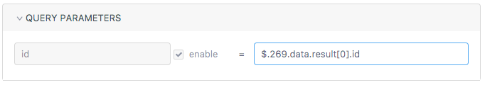

介绍 #
在平时的开发过程中，经常遇到的一个问题是每次调试接口都需要重新填写参数，YApi测试集不但能够保存之前填写的参数，方便下次的调试，还可以一次性测试所有接口，每个的请求参数可以通过前面已请求的接口数据读取，或填写mock随机字符串，通过设置断言脚本验证返回数据的正确性，
测试列表 #

在测试列表可以看到每个测试用例的 key,还有 开始测试、报告等功能
点击开始测试会按照 case 定义的参数从上往下一个一个进行测试，如果顺序有问题，可以拖动调整
测试完成之后，点击报告查看该次请求的结果
编辑测试用例 #
Mock参数 #
Mock 参数每次请求都会生成随机字符串

变量参数 #
YApi 提供了强大的变量参数功能，你可以在测试的时候使用前面接口的 参数 或 返回值 作为 后面接口的参数，即使接口之间存在依赖，也可以轻松 一键测试~
格式：
$.{key}.{params|body}.{path}
例如：现有两个接口，分别是“导航标题”和“文章列表”

文章列表接口需要传参数: 当前标题(id)，而这个 id 需要通过 导航标题 的返回值获取，这时应在 文章列表 的参数输入框中根据前者的 key 找到对应 id。
导航标题 的参数和返回值有如下结构：


则 文章列表 的参数可以如下配置：

其中 $. 是使用 动态变量 的标志，$.269.params 即表示 key 值为 269 用例的请求参数，$.269.body 即表示 key 值为 269 用例的返回值。
Tips: 上下拖动测试集合的列表项可以调整测试的顺序。
目前yapi中的query，body,header和pathParam的输入参数已经支持点击选择功能。无需自己填写表达式，只需在弹窗中选择需要展示的表达式即可。 输入选项包括常量，mock数据，在测试集合中也支持变量选择。
具体用法：单击编辑按钮打开表达式生成器，点击需要的数据创建表达式，这里也可以实时查看表达式结果。

自动化测试 #
可通过 js 脚本写断言，实现精准测试，在测试集列表点击 “高级” 按钮使用
公共变量 #
1.assert #
断言函数，详细 api 可查看 document
常用 api: #
assert(value)
判断 value 是否为 truth, 例如 assert(1) 通过， assert(0) 不通过，只要 value 不是 null, 0, false等值验证通过
assert.equal(actual, expected)
判断 actual 是否等于 expected，例如 assert(1, 1)通过
assert.notEqual(actual, expected)
判断 actual 是否不等于 expected
assert.deepEqual(actual, expected)
假设： actual = {a:1} 是一个对象，即便 expected = {a:1}，如果使用 assert.equal 可能也是不相等的，因为在 js 引用的只是对象的一个指针，需要使用 assert.deepEqual 比较两个对象是否相等
assert.notDeepEaual(actual, expected)
深度比较两个对象是否不相等
2.status #
http 状态码
3.params #
http request params, 合并了 query 和 body
4.body #
返回 response body
5.header #
返回 response header
6.records #
记录的 http 请求信息，假设需要获取 key 为 555 的接口参数或者响应数据，可通过 records[555].params 或 records[555].body 获取
7.log #
log（message） 函数,调试时使用，log 信息仅仅在断言失败后打印
示例 #
assert.equal(body.errcode, 0)
assert.equal(body.data.group_name, 'testGroup')
assert.equal(status, 200)